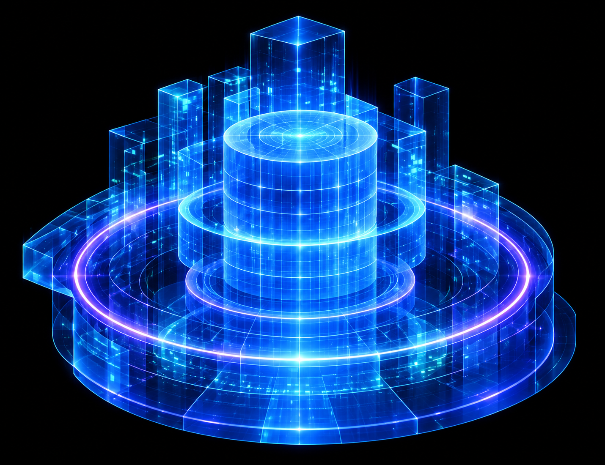

REVIEW HÌNH KHỐI · BLOCKOUT
Cụm dữ liệu trung tâm · v2
Blockout xám đứng yên; Hologram mode chỉ quay các ring/grid đã đặc tả. Camera và tỷ lệ còn đang kiểm chứng.
Ảnh PNG của preset hiện tại · Bằng chứng của preset
Blockout · 468 × 360 px
Ảnh gốc · chỉ cụm trung tâm là mục tiêu

Đang khởi tạo WebGL…
Bấm vào hình để chọn bộ phận. Kéo để xoay thủ công; không có tự xoay.
Camera và bằng chứng hiện tại
9 cột và 8 mảng đế là số lượng thiết kế đã duyệt. Việc dựng xong blockout chưa xác nhận độ giống hoặc vật liệu hologram.